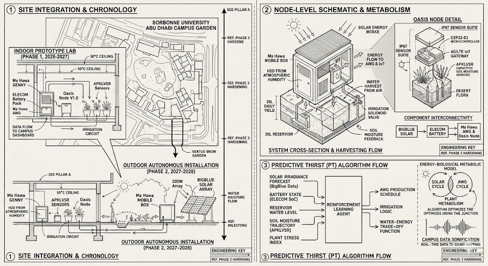
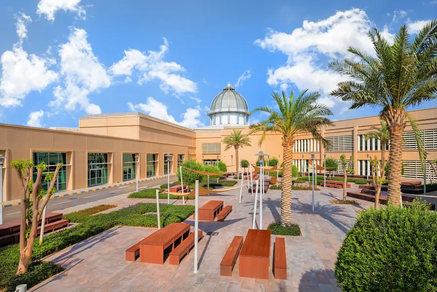
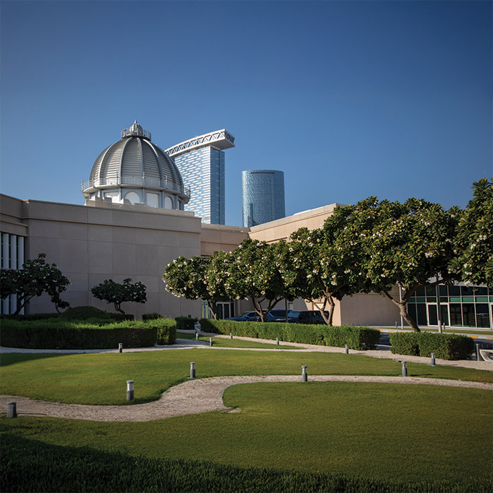
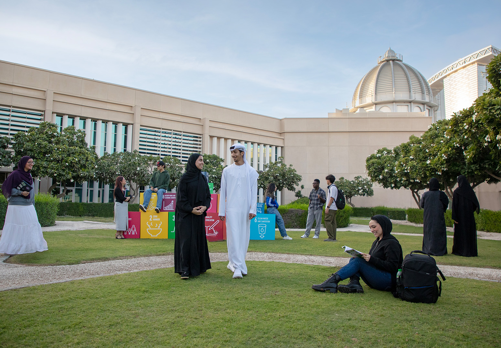
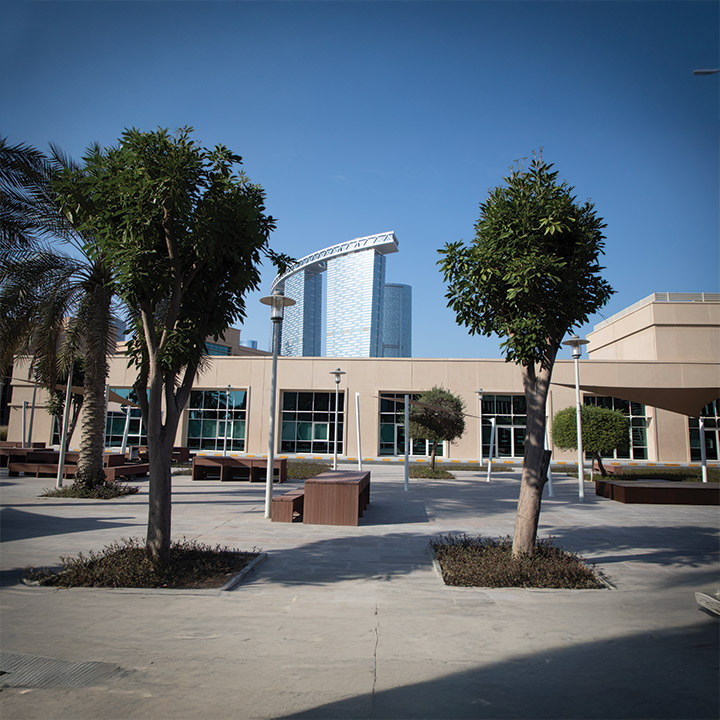
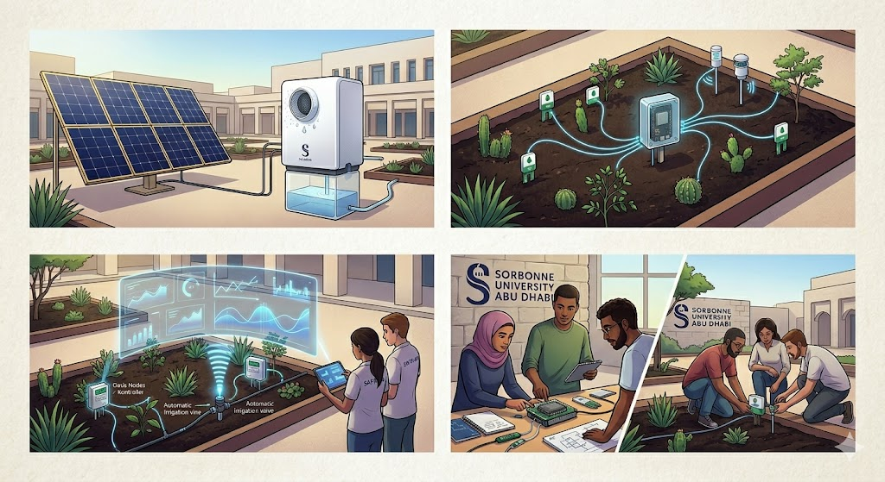

An interdisciplinary research platform investigating the integration of autonomous systems with desert ecology. The project explores self-sustaining metabolic cycles through atmospheric water generation and intelligent energy management.
Research Mandate
The The AI Research Garden advances the field of Eco-Autonomous Intelligence — a research framework where autonomous control systems optimize the metabolic requirements of biological life within extreme arid environments.
At Sorbonne University Abu Dhabi, this facility serves as a primary site for validating the efficacy of algorithmic governance over desert flora. By utilizing synthesized atmospheric humidity and photovoltaic energy, the project demonstrates a closed-loop ecosystem managed through real-time computational modelling.
The platform's environmental data — including soil matric potential, humidity gradients, and hygroscopic output — is integrated into a comprehensive monitoring system. This infrastructure bridges environmental science and machine learning, providing a robust dataset for empirical analysis.
Three specialized research teams — Sensors & Data, Energy & Water, and AI & Modelling — operate within a structure that emulates advanced R&D environments, ensuring that pedagogical outcomes align with the UAE's strategic sustainability objectives.
"The development of autonomous systems capable of sustaining biological life in extreme environments represents a critical intersection of ecological engineering and computational intelligence."SAFIR · Sorbonne University Abu Dhabi
"Arid environments serve as a rigorous validation ground for autonomous systems, where metabolic success is directly contingent upon operational precision."SCAI · Sorbonne Center for Artificial Intelligence

The Campus
The SUAD campus garden is both canvas and laboratory — a living space where botanical resilience meets algorithmic intelligence beneath the Gulf sun.
.jpeg)





System Architecture
The AI Research Garden integrates three critical domains: autonomous water production, intelligent energy management, and an interdisciplinary pedagogical framework — each essential to the facility's operation.
.jpeg)
Utilizing Ma Hawa AWG technology to extract pure water from atmospheric humidity, eliminating reliance on local groundwater or municipal supply. The Predictive Thirst (PT) model optimizes production cycles based on ambient conditions to maximize energy efficiency.

A dynamic power management layer utilizing BigBlue photovoltaics and high-capacity storage systems. An energy management agent schedules operational cycles based on irradiance forecasts and local meteorological events to ensure system autonomy.
The project functions as a pedagogical framework where students from Computer Science, Physics, and the Humanities collaborate on a shared autonomous system. This model facilitates cross-domain fluency, preparing researchers to navigate the complexities of real-world environmental deployments.
Academic Contribution
The project targets three peer-reviewed pillars, contributing empirical data and methodological frameworks to the fields of sustainable AI and environmental physics.
Development of the Predictive Thirst (PT) Framework: a Reinforcement Learning approach that balances biological hydration requirements with energy-intensive water production in extreme thermal conditions. Target: IEEE Internet of Things Journal or Journal of Cleaner Production.
Quantifying the performance of Ma Hawa AWG systems under variable solar irradiance in Abu Dhabi. This study generates the first long-term efficiency dataset for decentralized water production in the Gulf region. Target: Energy and Buildings or Sustainable Cities and Society.
A methodological evaluation of the collaborative research model — assessing the integration of CS, Physics, and Arts students within complex environmental systems. The research investigates whether interdisciplinary teams produce more resilient autonomous systems. Target: Journal of Engineering Education.
Impact Assessment
The AI Research Garden is designed to facilitate the formation of specialized researchers through hands-on engagement with advanced autonomous technologies.
Structure
Organized into specialized research teams — Sensors & Data, Energy & Water, and AI & Modelling — students collaborate under a shared agenda, mirroring the structure of professional research laboratories.
Output
Providing the empirical basis for Master's theses across Applied AI, Environmental Physics, and Human-Computer Interaction, while serving as a capstone project for the SUAD Computer Science curriculum.
Competencies
Practical experience in deploying hardware within extreme environments (50°C summer peaks, high humidity, and dust-storm interference), developing competencies essential for the regional IoT sector.
Project Timeline
A structured progression from indoor proof-of-concept to a fully autonomous outdoor garden — culminating in public installation, academic publication, and an open-source software release.
Year One
September – December 2026
January – May 2027
Year Two
September – December 2027
January – June 2028
Institutional Collaboration
The Sorbonne Abu Dhabi for Innovation and Research (SAFIR) is the university's multidisciplinary research hub. Grounded in interdisciplinarity, SAFIR brings together diverse fields of inquiry to address the complex realities shaping Abu Dhabi and the UAE.
The Sorbonne Center for Artificial Intelligence — contributing cross-disciplinary research expertise, co-designing the interdisciplinary student curriculum, and shaping the human-centred dimensions of the AI-nature interface.
The UAE's pioneer in Atmospheric Water Generation technology — providing the critical hardware that makes water-from-air production viable in the Gulf climate, and a strategic partner in commercializing the project's findings.
National Alignment
Directly contributing to the nation's vision for a sustainable, knowledge-driven economy
Decentralized atmospheric water generation offers a scalable alternative to energy-intensive desalination, advancing food and water sovereignty for the Gulf region and supporting the UAE's water security agenda beyond 2040.
Machine learning applied to biodiversity preservation and ecological resource optimization — directly advancing the UAE's commitment to Net Zero 2050 and building on the COP28 legacy of climate action hosted in Abu Dhabi.
Positioning Sorbonne University Abu Dhabi as a global centre for interdisciplinary applied AI research, with outcomes presented at GITEX Global, COP31/32, and international journals of record.
Training the next generation of Emirati and international researchers in applied AI, resilient IoT engineering, environmental physics, and data science — competencies critical to UAE Vision 2031.